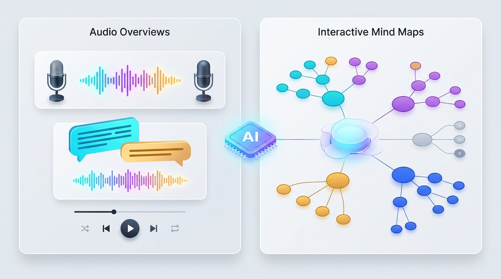

1. 도입: AI 리서치 도구, 첫걸음부터 막막하셨나요?
"성능 좋은 AI 노트 도구가 있다는 건 알겠는데, 정작 어떤 자료를 넣어서 어떻게 써야 할지 모르겠어요."
혹시 구글의 AI 기반 리서치 어시스턴트인 NotebookLM을 처음 열었을 때, 텅 빈 소스 업로드 창 앞에서 이런 고민을 해본 적이 있으신가요? 좋은 답변을 얻으려면 먼저 신뢰할 수 있는 PDF, 논문, 웹 문서들을 직접 찾아 정리해야 한다는 점은 많은 사용자에게 보이지 않는 진입 장벽이었습니다.
만약 세계적인 언론사, 베스트셀러 저자, 석학들이 이미 엄선해 둔 최고 품질의 자료집이 눈앞에 준비되어 있고, 클릭 한 번으로 그 지식과 대화하거나 AI 팟캐스트로 들을 수 있다면 어떨까요? 구글이 새롭게 선보인 'Featured Notebooks(특집/추천 노트북)'가 바로 그 상상을 현실로 만들었습니다.
2. 핵심 요약: Featured Notebooks의 3가지 핵심 가치
바쁜 독자분들을 위해 Featured Notebooks가 제공하는 가장 중요한 변화 3가지를 먼저 정리해 드립니다.
- 전문가·글로벌 기관의 사전 큐레이션 (Expert-Curated Sources)
사용자가 직접 문서를 수집할 필요 없이, The Economist, The Atlantic, 저명한 연구자 및 작가가 직접 선별·검증한 고품질 소스 컬렉션을 즉시 탐색할 수 있습니다.
- 멀티모달 AI 도구의 즉각적인 경험 (Pre-Built Multimodal AI Tools)
AI 호스트가 대화하듯 주제를 설명해 주는 오디오 오버뷰(Audio Overviews), 복잡한 개념을 시각화한 인터랙티브 마인드맵(Mind Maps), 그리고 정확한 출처 인용(Citation) 기반의 심층 질의응답(Q&A)이 미리 준비되어 있습니다.
- 안전한 탐색 환경과 지식 공유 생태계 확장 (Read-Only & Public Sharing)
원본 소스를 훼손할 걱정 없는 읽기 전용(Read-Only) 학습 환경을 제공하며, 누구나 자신의 노트북을 공유할 수 있는 공개 공유(Public Sharing) 생태계와 맞물려 지식 소비의 방식을 혁신합니다.
3. 상세 설명: 구체적인 예시로 살펴보는 Featured Notebooks
① 세계적인 전문가와 미디어가 직접 만든 지식 컬렉션
기존의 AI 검색이 인터넷의 무분별한 정보를 긁어와 답변했다면, Featured Notebooks는 '누가 검증한 자료인가'에 집중합니다. 구글은 각 분야의 권위자 및 미디어 파트너와 협력하여 깊이 있는 주제별 노트북을 구축했습니다.
- 글로벌 경제 및 국제 정세: 영국 시사 주간지 The Economist(이코노미스트)의 연례 특별 보고서인 "The World Ahead" 노트북을 열면, 올해의 세계 경제 전망과 지정학적 이슈를 담은 방대한 리포트를 한눈에 분석할 수 있습니다.
- 건강과 장수 과학: 세계적인 의학 연구자 에릭 토폴(Eric Topol) 박사의 저서 "Super Agers(슈퍼 에이저)" 노트북에서는 건강한 노화와 최신 의학 연구 데이터를 직접 질문하며 탐색할 수 있습니다.
- 인문·교양 및 라이프스타일: The Atlantic(애틀랜틱)의 칼럼니스트 아서 브룩스(Arthur C. Brooks)가 집필한 "How to Build a Life(삶을 가꾸는 법)" 칼럼 모음부터 윌리엄 셰익스피어 전집, 옐로스톤 국립공원 생태·지질 가이드에 이르기까지 학술과 일상을 아우르는 다채로운 컬렉션이 제공됩니다.
가장 큰 장점은 출처 기반 인용(Grounded Citations)입니다. 사용자가 채팅창에 질문을 던지면, AI는 임의로 지어낸 말이 아니라 해당 전문가가 작성한 원문의 정확한 문단과 출처를 번호로 매겨 함께 보여줍니다.
② 듣는 팟캐스트부터 보는 마인드맵까지, 사전 생성된 AI 분석 도구

Featured Notebooks에 접속하면 수십 개의 원문 파일을 일일이 읽지 않아도 입체적인 학습이 가능하도록 사전 생성된 AI 아티팩트(Pre-Built Artifacts)가 즉시 제공됩니다.
- 오디오 오버뷰 (Audio Overviews): 버튼 하나만 누르면 두 명의 AI 호스트가 등장해 노트북의 핵심 주제를 주고받으며 흥미진진한 팟캐스트 형식으로 풀어냅니다. 예를 들어 출퇴근길에 The Economist의 글로벌 경제 전망을 라디오처럼 들으며 핵심을 파악할 수 있습니다.
- 인터랙티브 마인드맵 (Mind Maps): 방대한 자료 속 핵심 키워드와 하위 개념들이 어떻게 연결되는지 시각적인 트리 구조로 보여줍니다. 궁금한 노드를 클릭하면 해당 개념에 대한 세부 설명과 원문 근거로 바로 이동합니다.
- 맞춤형 대화 및 추천 질문: 처음 접하는 분야라도 당황할 필요가 없습니다. 노트북마다 사전 구성된 브리핑 문서, FAQ, 타임라인과 추천 질문이 제공되어 클릭만으로도 깊이 있는 탐구를 시작할 수 있습니다.
③ 읽기 전용 안전망과 14만 개를 돌파한 지식 공유 생태계
Featured Notebooks는 누구나 안심하고 실험해 볼 수 있도록 읽기 전용(Read-Only) 환경으로 설계되었습니다. 사용자가 실수로 원본 소스를 삭제하거나 구성을 망가뜨릴 염려가 없으며, 그 안에서 자유롭게 질문하고 아이디어를 얻을 수 있습니다.
또한 이 기능은 NotebookLM의 공개 공유(Public Sharing) 기능과 강력한 시너지를 내고 있습니다.
- 사용자는 공식 Featured Notebooks를 통해 "좋은 노트북이란 어떻게 구성되는가"에 대한 모범 사례(Best Practice)를 자연스럽게 배울 수 있습니다.
- 이후 자신이 직접 모은 자료로 나만의 노트북을 만들고
링크가 있는 모든 사용자(Anyone with a link)설정을 통해 동료, 학생, 커뮤니티에 손쉽게 공유할 수 있습니다. 실제로 공개 공유 기능 출시 한 달 만에 전 세계 사용자들이 만든 공개 노트북이 14만 개를 넘어설 만큼 폭발적인 호응을 얻고 있습니다.
4. 마무리: '읽는 책'에서 '대화하는 지식'으로의 패러다임 전환
구글 NotebookLM의 Featured Notebooks는 단순한 기능 업데이트를 넘어, 우리가 정보를 소비하고 지식을 유통하는 방식에 중요한 이정표를 제시합니다.
과거에는 저자가 책을 쓰거나 기관이 보고서를 발행하면 독자는 처음부터 끝까지 정해진 순서대로 읽어야 하는 단방향 소비에 머물렀습니다. 하지만 이제는 독자가 자신의 수준과 관심사에 맞춰 저자의 자료집에 직접 질문을 던지고, 오디오로 듣고, 마인드맵으로 구조를 파악하는 '양방향 인터랙티브 지식 미디어' 시대가 열렸습니다.
앞으로 대학 강의실의 교재, 기업의 기술 백서, 공공기관의 정책 보고서들이 단순한 PDF 파일 대신 '큐레이션된 AI 노트북' 형태로 배포되는 풍경이 일상화될 것입니다. 지금 바로 NotebookLM 공식 웹사이트의 Featured Notebooks 탭을 열어, 세계적인 전문가들이 준비해 둔 지식의 바다와 대화를 시작해 보시는 건 어떨까요?
참고 자료 (References)
- Google Official Blog (The Keyword): https://blog.google/technology/google-labs/notebooklm-featured-notebooks/
- Google AI Blog: https://blog.google/technology/ai/notebooklm-featured-notebooks/
- Thurrott 기술 분석 리포트: https://thurrott.com/cloud/google/google-workspace/313366/google-brings-featured-notebooks-to-notebooklm
- Google NotebookLM 고객센터 도움말: https://support.google.com/notebooklm/answer/15239327
- Google NotebookLM 공식 사이트: https://notebooklm.google.com